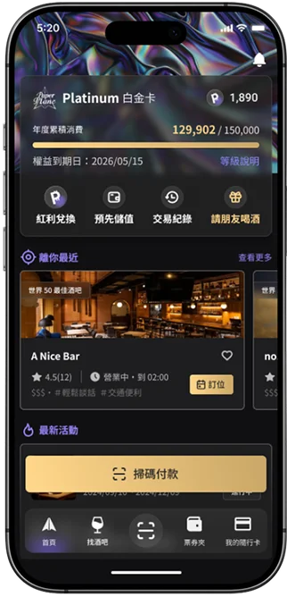

Key Decision · V1
押注電寶：
大膽重塑品牌個性
台電當時有個知名度很低的新吉祥物「電寶」。我的判斷是：要讓用戶真的喜歡這個 App，就必須讓它有自己的個性——而不是另一個無聊的政府介面。
以電寶為核心，完整重塑整個 App 的遊戲化視覺語言。V1 建立基礎機制：每日節電問答 · 出外開寶箱 · 點數兌換超商禮券 / 折抵電費。

台電當時有個知名度很低的新吉祥物「電寶」。我的判斷是：要讓用戶真的喜歡這個 App，就必須讓它有自己的個性——而不是另一個無聊的政府介面。
以電寶為核心，完整重塑整個 App 的遊戲化視覺語言。V1 建立基礎機制：每日節電問答 · 出外開寶箱 · 點數兌換超商禮券 / 折抵電費。
V2：高等級玩家卡關流失。新增計步、派遣技能、MGM 推薦機制——靠行為類型的多樣化延長使用週期，而非靠內容量。
V3：實體禮品預算有限，轉向虛擬道具——電寶換裝 + 房間佈置的紙娃娃系統。能做這件事，是因為前兩個版本已把用戶對電寶的情感積累起來。如果第一天就推換裝，用戶不會在意。


V1 上線後，大部分用戶仍透過 LINE 官方帳號跳轉使用。LINE OA 體驗先天受限、流程繁瑣，但慣性就是停在那裡。
問題不只是「App 體驗不夠好」，而是「用戶根本還沒有形成使用 App 的習慣」。需要同步強化 App 曝光，並從根本優化 App 體驗，讓用戶第一次打開就值得留下來。

坐在酒吧結帳區附近觀察後發現：用戶的心智模型裡，tab bar 是導覽列，不是操作按鈕。即使付款圖示就在中間，用戶就是不會去點它。
這是設計業界普遍存在的假設——「放中間就很顯眼」。V1 犯了這個錯誤。
V2 解法：把付款按鈕改成懸浮在首頁的主視覺元素，在任何情境下都不可能被誤認為導覽項目。

除了酒吧現場觀察，也以工作人員身份參與實體擺攤活動，完整走過新用戶從下載 → 註冊 → 領取獎勵的全流程，把反覆出現的卡點一一記錄修正。
V2 根據後台數據重新規劃首頁資訊層級，V1 的地圖首頁改為功能完整的首頁，把用戶真正常用的功能直接放到面前。
V2 上線約六個月